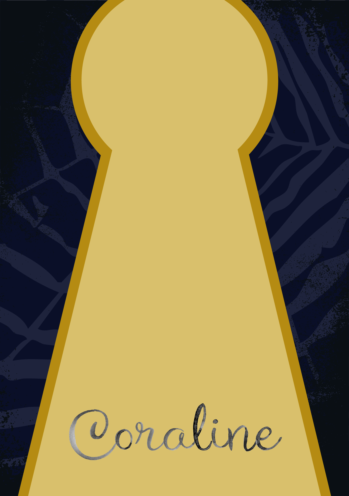
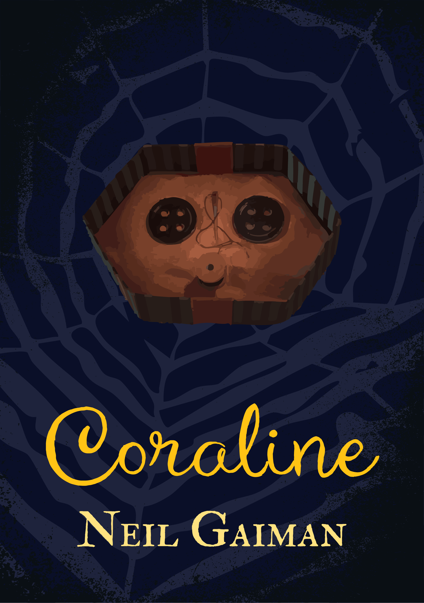
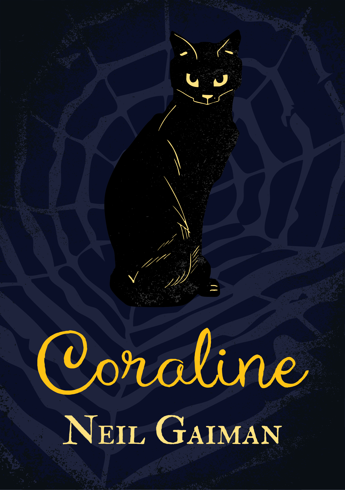

"Coraline" - Neil Gaiman
"Coraline", a fictional novel directed at children and adolescents, is known for its darker themes of child neglect, early independency and overall unsettling tone. Nevertheless, it is quite popular and was even adapted by Laika Studio in 2009.
Concept
It was a challenge at first, to figure out a good visual representation of the book's both grim and hopeful story, while still appealing to children. After some thought, it was clear that the cover needed to be somewhat mysterious to encourage curious kids to find out more.
Thus, I decided to use a more flat look for the imagery, in order to keep the book from looking to "adult" and "boring". Choosing a darker colour to represent the story's mystery & serious themes, I needed a lighter colour to contrast that and represent the hopeful ending.
Production
  Result
Having worked out the cover's background, I needed a strong visual that would represent the whole story. My first option was a stylized image of buttons from the movie adaptation. Even though it was a good fit, I wasn't sure the publishing company would get the license for it from Laika, so I changed course and chose a black cat instead, which not only represnted a character from the book itself but the book's message:
To never trust beautiful illusions.